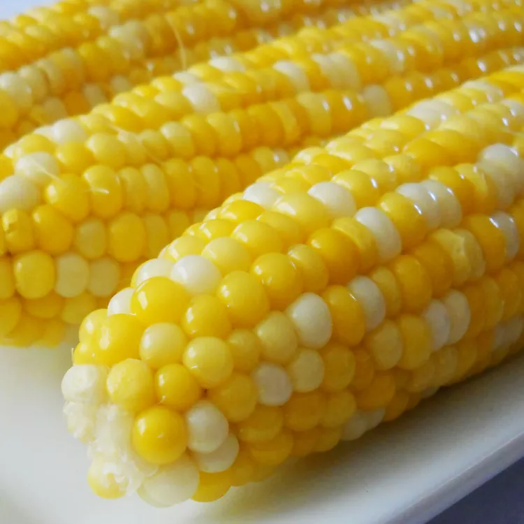

Jamie's Sweet and Easy Corn on the Cob

Descriptions
Corn on the cob is cooked in boiled water with a little sugar and lemon
juice for the sweetest, tastiest corn.
Ingredients
- 2 tablespoons white sugar
- 1 tablespoon lemon juice
- 6 ears corn on the cob, husks and silk removed
Steps
-
Fill a large pot about 3/4 full of water and bring to a boil. Stir in
sugar and lemon juice until sugar is dissolved.
-
Gently place ears of corn into boiling water, cover the pot, turn off
the heat, and let corn cook in the hot water until tender, about 10
minutes.
- Enjoy!